Spring AOP源码
1. AOP, AspectJ, Spring AOP 前世今生
我们先来把它们的概念和关系说说清楚，我们学习的Spring-AOP其实冰山一角，但是AOP还有很多的相关内容需要了解。
AOP 要实现的是在我们原来写的代码的基础上，进行一定的包装，如在方法执行前、方法返回后、方法抛出异常后等地方进行一定的拦截处理或者叫增强处理。
AOP 的实现并不是因为 Java 提供了什么神奇的钩子，可以把方法的几个生命周期告诉我们，而是我们要实现一个代理，实际运行的实例其实是生成的代理类的实例。
作为 Java 开发者，我们都很熟悉 AspectJ 这个词，甚至于我们提到 AOP 的时候，想到的往往就是 AspectJ，即使你可能不太懂它是怎么工作的。这里，我们把 AspectJ 和 Spring AOP 做个简单的对比：
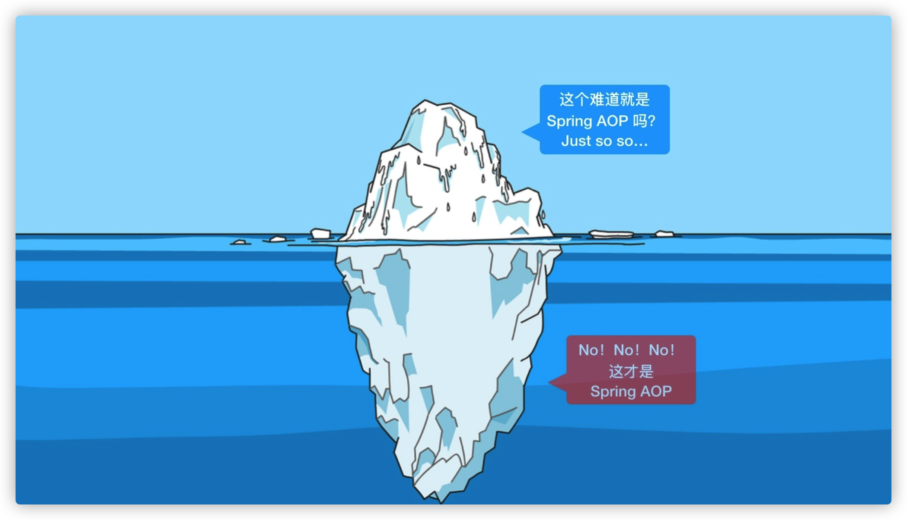
AOP 术语解释
https://www.processon.com/view/link/5ecca5ebe0b34d5f262eae3a
Spring Aop
- 它基于动态代理来实现。默认地，如果使用接口的，用 JDK 提供的动态代理实现，如果没有接口，使用 CGLIB 实现。大家一定要明白背后的意思，包括什么时候会不用 JDK 提供的动态代理，而用 CGLIB 实现。
- Spring 3.2 以后，spring-core 直接就把 CGLIB 和 ASM 的源码包括进来了，这也是为什么我们不需要显式引入这两个依赖
- Spring 的 IOC 容器和 AOP 都很重要，Spring AOP 需要依赖于 IOC 容器来管理。
- pring AOP 只能作用于 Spring 容器中的 Bean，它是使用纯粹的 Java 代码实现的，只能作用于 bean 的方法。
- Spring 提供了 AspectJ 的支持，但只用到的AspectJ的切点解析和匹配。
- 很多人会对比 Spring AOP 和 AspectJ 的性能，Spring AOP 是基于代理实现的，在容器启动的时候需要生成代理实例，在方法调用上也会增加栈的深度，使得 Spring AOP 的性能不如 AspectJ 那么好。
AspectJ
- AspectJ 出身也是名门，来自于 Eclipse 基金会，link：https://www.eclipse.org/aspectj
- 属于静态织入，它是通过修改代码来实现的，它的织入时机可以是：
- Compile-time weaving：编译期织入，如类 A 使用 AspectJ 添加了一个属性，类 B 引用了它，这个场景就需要编译期的时候就进行织入，否则没法编译类 B。
- Post-compile weaving：编译后织入，也就是已经生成了 .class 文件，或已经打成 jar 包了，这种情况我们需要增强处理的话，就要用到编译后织入。
- Load-time weaving：指的是在加载类的时候进行织入，要实现这个时期的织入，有几种常见的方法。1、自定义类加载器来干这个，这个应该是最容易想到的办法，在被织入类加载到 JVM 前去对它进行加载，这样就可以在加载的时候定义行为了。2、在 JVM 启动的时候指定 AspectJ 提供的
agent：-javaagent:xxx/xxx/aspectjweaver.jar。
- AspectJ 能干很多 Spring AOP 干不了的事情，它是 AOP 编程的完全解决方案。Spring AOP 致力于解决的是企业级开发中最普遍的 AOP 需求（方法织入），而不是力求成为一个像 AspectJ 一样的 AOP 编程完全解决方案。
- 因为 AspectJ 在实际代码运行前完成了织入，所以大家会说它生成的类是没有额外运行时开销的。
Spring AOP
首先要说明的是，这里介绍的 Spring AOP 是纯的 Spring 代码，和 AspectJ 没什么关系，但是 Spring 延用了 AspectJ 中的概念，包括使用了 AspectJ 提供的 jar 包中的注解，但是不依赖于其实现功能。
后面介绍的如 @Aspect、@Pointcut、@Before、@After 等注解都是来自于 AspectJ，但是功能的实现是纯 Spring AOP 自己实现的。
下面我们来介绍 Spring AOP 的使用方法，先从最简单的配置方式开始说起，这样读者想看源码也会比较容易。 目前 Spring AOP 一共有三种配置方式，Spring 做到了很好地向下兼容，所以大家可以放心使用。
- Spring 1.2 基于接口的配置：最早的 Spring AOP 是完全基于几个接口的，想看源码的同学可以从这里起步。
- Spring 2.0 schema-based 配置：Spring 2.0 以后使用 XML 的方式来配置，使用 命名空间
<aop></aop> - Spring 2.0 @AspectJ 配置：使用注解的方式来配置，这种方式感觉是最方便的，还有，这里虽然叫做 @AspectJ，但是这个和 AspectJ 其实没啥关系。
1.1 Spring 1.2 中的配置
这节我们将介绍 Spring 1.2 中的配置，这是最古老的配置，但是由于 Spring 提供了很好的向后兼容，以及很多人根本不知道什么配置是什么版本的，以及是否有更新更好的配置方法替代，所以还是会有很多代码是采用这种古老的配置方式的（比如声明式事务），这里说的古老并没有贬义的意思。 下面用一个简单的例子来演示怎么使用 Spring 1.2 的配置方式。
首先定义需要被增强的类：
接口：Calculate.java， 实现类：TulingCalculate.java
/**
* 计算类接口
*/
public interface Calculate {
/**
* 加法
* @param numA
* @param numB
* * @return
*/
int add(int numA, int numB);
/**
* 减法
* @param numA
* @param numB
* @return
*/
int sub(int numA, int numB);
/**
* 除法
* @param numA
* @param numB
* @return
*/
int div(int numA, int numB);
/**
* 乘法
* @param numA
* @param numB
* @return
*/
int multi(int numA, int numB);
int mod(int numA, int numB);
}
@Componentpublic
class TulingCalculate implements Calculate {
public int add(int numA, int numB) {
System.out.println("执行目标方法:add");
System.out.println(1 / 0);
return numA + numB;
}
public int sub(int numA, int numB) {
System.out.println("执行目标方法:reduce");
return numA - numB;
}
public int div(int numA, int numB) {
System.out.println("执行目标方法:div");
return numA / numB;
}
public int multi(int numA, int numB) {
System.out.println("执行目标方法:multi");
return numA * numB;
}
public int mod(int numA, int numB) {
System.out.println("执行目标方法:mod");
int retVal = ((Calculate) AopContext.currentProxy()).add(numA, numB);
//int retVal = this.add(numA,numB);
return retVal % numA;
// return numA%numB;
}
}
接下来，我们定义 advice或Interceptor， 我这里提供2个：
advice 是我们接触的第一个概念，记住它是干什么用的。
public class TulingLogAdvice implements MethodBeforeAdvice {
@Override
public void before(Method method, Object[] args, Object target) throws Throwable {
String methodName = method.getName();
System.out.println("执行目标方法【" + methodName + "】的<前置通知>,入参" + Arrays.asList(args));
}
}
public class TulingLogInterceptor implements MethodInterceptor {
@Override
public Object invoke(MethodInvocation invocation) throws Throwable {
System.out.println(getClass() + "调用方法前");
Object ret = invocation.proceed();
System.out.println(getClass() + "调用方法后");
return ret;
}
}
上面的两个 Advice 分别用于方法调用前输出参数和方法调用后输出结果。现在可以开始配置了，通过配置类FactoryBean方式创建单个代理：
// 被代理对象
@Bean
public Calculate tulingCalculate() {
return new TulingCalculate();
}
// Advice 方式
@Bean
public TulingLogAdvice tulingLogAdvice() {
return new TulingLogAdvice();
}
// Interceptor方式 ， 类似环绕通知
@Bean
public TulingLogInterceptor tulingLogInterceptor() {
return new TulingLogInterceptor();
}
/**
* FactoryBean方式单个： ProxyFactoryBean
*
* @return
*/
@Bean
public ProxyFactoryBean calculateProxy() {
ProxyFactoryBean userService = new ProxyFactoryBean();
userService.setInterceptorNames("tulingLogAdvice", "tulingLogInterceptor");
// 根据指定的顺序执行
userService.setTarget(tulingCalculate());
return userService;
}
接下来，我们跑起来看看：
public static void main(String[] args) {
AnnotationConfigApplicationContext ctx =
new AnnotationConfigApplicationContext(EalyAopMainConfig.class);
Calculate calculateProxy = ctx.getBean("calculateProxy",Calculate.class);
calculateProxy.div(1,1);
}
查看输出结果：
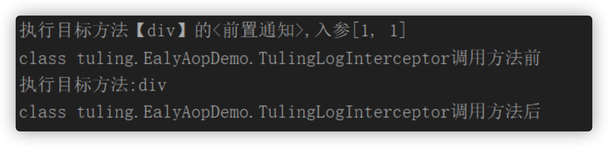
从结果可以看到，使用了责任链方式对advice和Interceptor都进行调用。这个例子理解起来应该非常简单，就是通过调用FactoryBean的getObject方法创建一个代理实现。
代理模式需要一个接口（可选）、一个具体实现类，然后就是定义一个代理类，用来包装实现类，添加自定义逻辑，在使用的时候，需要用代理类来生成实例。
此中方法有个致命的问题，如果我们只能指定单一的Bean的AOP， 如果多个Bean需要创建多个ProxyFactoryBean 。而且，我们看到，我们的拦截器的粒度只控制到了类级别，类中所有的方法都进行了拦截。接下来，我们看看怎么样只拦截特定的方法。 在上面的配置中，配置拦截器的时候，interceptorNames 除了指定为 Advice，是还可以指定为 Interceptor 和 Advisor 的。 这里我们来理解 Advisor 的概念，它也比较简单，它内部需要指定一个 Advice，Advisor 决定该拦截哪些方法，拦截后需要完成的工作还是内部的 Advice 来做。 它有好几个实现类，这里我们使用实现类 NameMatchMethodPointcutAdvisor 来演示，从名字上就可以看出来，它需要我们给它提供方法名字，这样符合该配置的方法才会做拦截。
@Bean
public NameMatchMethodPointcutAdvisor tulingLogAspect() {
NameMatchMethodPointcutAdvisor advisor = new NameMatchMethodPointcutAdvisor();
// 通知(Advice) ：是我们的通知类
// 通知者(Advisor)：是经过包装后的细粒度控制方式。
advisor.setAdvice(tulingLogAdvice());
advisor.setMappedNames("div");
return advisor;
}
/**
* FactoryBean方式单个： ProxyFactoryBean * 控制粒度到方法 * @return
*/
@Bean
public ProxyFactoryBean calculateProxy() {
ProxyFactoryBean userService = new ProxyFactoryBean();
userService.setInterceptorNames("tulingLogAspect");
userService.setTarget(tulingCalculate());
return userService;
}
我们可以看到，calculateProxy这个 bean 配置了一个 advisor，advisor 内部有一个 advice。advisor 负责匹配方法，内部的 advice 负责实现方法包装。 注意，这里的 mappedNames 配置是可以指定多个的，用逗号分隔，可以是不同类中的方法。相比直接指定 advice，advisor 实现了更细粒度的控制，因为在这里配置 advice 的话，所有方法都会被拦截。
public static void main(String[] args) {
AnnotationConfigApplicationContext ctx =
new AnnotationConfigApplicationContext(EalyAopMainConfig.class);
Calculate calculateProxy = ctx.getBean("calculateProxy",Calculate.class);
calculateProxy.div(1,1);
}
输出结果如下，只有 div方法被拦截：
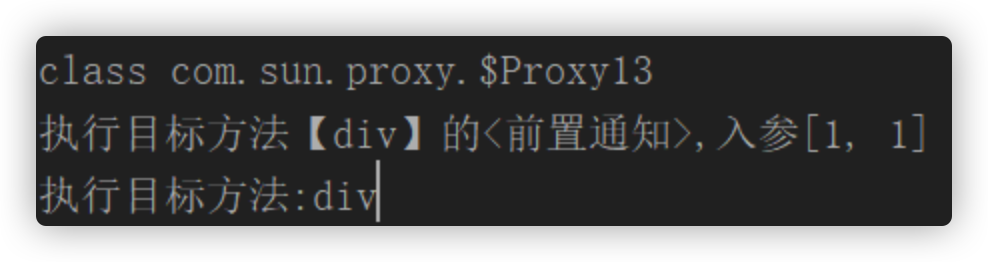
上面，我们介绍完了 Advice、Advisor、Interceptor 三个概念，相信大家应该很容易就看懂它们了。
它们有个共同的问题，那就是我们得为每个 bean 都配置一个代理，之后获取 bean 的时候需要获取这个代理类的 bean 实例（如 ctx.getBean("calculateProxy",Calculate.class)），这显然非常不方便，不利于我们之后要使用的自动根据类型注入。下面介绍 autoproxy 的解决方案。
autoproxy
从名字我们也可以看出来，它是实现自动代理，也就是说当 Spring 发现一个 bean 需要被切面织入的时候，Spring 会自动生成这个 bean 的一个代理来拦截方法的执行，确保定义的切面能被执行。
这里强调自动，也就是说 Spring 会自动做这件事，而不用像前面介绍的，我们需要显式地指定代理类的 bean。
我们去掉原来的 ProxyFactoryBean 的配置，改为使用 BeanNameAutoProxyCreator 来配置：
/**
* autoProxy: BeanPostProcessor手动指定Advice方式 BeanNameAutoProxyCreator * @return
*/
@Bean
public BeanNameAutoProxyCreator autoProxyCreator() {
BeanNameAutoProxyCreator beanNameAutoProxyCreator = new BeanNameAutoProxyCreator();
//设置要创建代理的那些Bean的名字
beanNameAutoProxyCreator.setBeanNames("tuling*");
//设置拦截链名字(这些拦截器是有先后顺序的)
beanNameAutoProxyCreator.setInterceptorNames("tulingLogInterceptor");
return beanNameAutoProxyCreator;
}
配置很简单，beanNames 中可以使用正则来匹配 bean 的名字来增强多个类。 也就是说不再是配置某个 bean 的代理了。
注意，这里的 InterceptorNames 和前面一样，也是可以配置成 Advisor 和 Interceptor 的。
然后我们修改下使用的地方：
public static void main(String[] args) {
AnnotationConfigApplicationContext ctx =
new AnnotationConfigApplicationContext(EalyAopMainConfig.class);
Calculate tulingCalculate = ctx.getBean("tulingCalculate",Calculate.class);
tulingCalculate.div(1,1);
}
发现没有，我们在使用的时候，完全不需要关心代理了，直接使用原来的类型就可以了，这是非常方便的。 输出结果就是 OrderService 和 UserService 中的每个方法都得到了拦截：
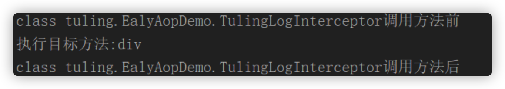
到这里，是不是发现 BeanNameAutoProxyCreator 非常好用，它需要指定被拦截类名的模式(如 *ServiceImpl)，它可以配置多次，这样就可以用来匹配不同模式的类了。
另外，在 BeanNameAutoProxyCreator 同一个包中，还有一个非常有用的类 DefaultAdvisorAutoProxyCreator，比上面的 BeanNameAutoProxyCreator 还要方便。
之前我们说过，advisor 内部包装了 advice，advisor 负责决定拦截哪些方法，内部 advice 定义拦截后的逻辑。所以，仔细想想其实就是只要让我们的 advisor 全局生效就能实现我们需要的自定义拦截功能、拦截后的逻辑处理。
BeanNameAutoProxyCreator 是自己匹配方法，然后交由内部配置 advice 来拦截处理； 而 DefaultAdvisorAutoProxyCreator 是让 ioc 容器中的所有 advisor 来匹配方法，advisor 内部都是有 advice 的，让它们内部的 advice 来执行拦截处理。
- 我们需要再回头看下 Advisor 的配置，上面我们用了 NameMatchMethodPointcutAdvisor 这个类：
/**
*autoProxy: BeanPostProcessor手动指定Advice方式 BeanNameAutoProxyCreator
* @return
*/
@Bean
public BeanNameAutoProxyCreator autoProxyCreator() {
BeanNameAutoProxyCreator beanNameAutoProxyCreator = new BeanNameAutoProxyCreator();
//设置要创建代理的那些Bean的名字 beanNameAutoProxyCreator.setBeanNames("tuling*");
// 设置拦截链名字(这些拦截器是有先后顺序的)
beanNameAutoProxyCreator.setInterceptorNames("tulingLogInterceptor");
return beanNameAutoProxyCreator;
}
其实 Advisor 还有一个更加灵活的实现类 RegexpMethodPointcutAdvisor，它能实现正则匹配，如：
// RegexpMethodPointcutAdvisor 按正则匹配类
@Bean
public RegexpMethodPointcutAdvisor tulingLogAspectInterceptor() {
RegexpMethodPointcutAdvisor advisor = new RegexpMethodPointcutAdvisor();
advisor.setAdvice(tulingLogInterceptor());
advisor.setPattern("tuling.TulingCalculate.*");
return advisor;
}
也就是说，我们能通过配置 Advisor，精确定位到需要被拦截的方法，然后使用内部的 Advice 执行逻辑处理。
- 之后，我们需要配置 DefaultAdvisorAutoProxyCreator，它的配置非常简单，直接使用下面这段配置就可以了，它就会使得所有的 Advisor 自动生效，无须其他配置。（记得把之前的autoProxyCreator配置去掉，无需创建2次代理）
/**
* BeanPostProcessor自动扫描Advisor方式 DefaultAdvisorAutoProxyCreator
* @return
*/
@Bean
public DefaultAdvisorAutoProxyCreator autoProxyCreator() {
return new DefaultAdvisorAutoProxyCreator();
}
然后我们运行一下：
public static void main(String[] args) {
AnnotationConfigApplicationContext ctx = new AnnotationConfigApplicationContext(EalyAopMainConfig.class);
Calculate tulingCalculate = ctx.getBean("tulingCalculate", Calculate.class);
tulingCalculate.div(1, 1);
}
输出：
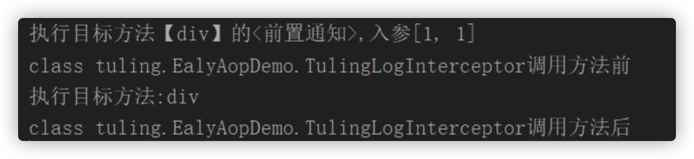
从结果可以看出，create 方法使用了 logArgsAdvisor 进行传参输出，query 方法使用了 logResultAdvisor 进行了返回结果输出。
到这里，Spring 1.2 的配置就要介绍完了。本文不会介绍得面面俱到，主要是关注最核心的配置，如果读者感兴趣，要学会自己去摸索，比如这里的 Advisor 就不只有我这里介绍的 NameMatchMethodPointcutAdvisor 和 RegexpMethodPointcutAdvisor，AutoProxyCreator 也不仅仅是 BeanNameAutoProxyCreator 和 DefaultAdvisorAutoProxyCreator。
还有 Spring 2.0 @AspectJ 配置 Spring 2.0 schema-based 配置。
1.2 AspectJ编译方式实现AOP
AspectJ方式不多讲，2大核心：
定义了切面表达式的语法和解析机制
提供了强大的织入工具
它是通过织入的方式：直接将切面在【编译前、后】或【JVM加载的时候】进行织入到.class代码中。在实际生产中，我们用得最多的还是纯 Spring AOP，因为AspectJ学习成本高， Spring AOP已经能满足日常开发种的需求。 通过本AspectJ大家了解下 Spring Aop只用到了aspectj的设计理念（注解)和切点表达式配对。
AccountAspect.aj
public aspect AccountAspect {
pointcut callPay(int amount,Account account):
call(boolean cn.tulingxueyuan.myAspectJ.model.Account.pay(int)) &&
args(amount)&&target(account);
before(int amount,Account account):callPay(amount,account) {
System.out.println("[AccountAspect]付款前总金额: "+account.balance);
System.out.println("[AccountAspect]需要付款: "+amount);
}
boolean around(int amount,Account account):callPay(amount,account) {
if(account.balance<amount) {
System.out.println("[AccountAspect]拒绝付款!");
return false;
}
return proceed(amount,account);
}
after(int amount,Account balance):callPay(amount,balance) {
System.out.println("[AccountAspect]付款后，剩余："+balance.balance);
}
}
MainApp.java
public class MainApp {
public static void main(String[] args) {
testCompileTime();
}
public static void testCompileTime() {
Account account = new Account();
System.out.println("==================");
account.pay(10);
account.pay(50);
System.out.println("==================");
}
}
织入后：
public class MainApp {
public MainApp() {
}
public static void main(String[] args) {
testCompileTime();
}
public static void testCompileTime() {
Account account = new Account();
System.out.println("==================");
byte var1 = 10;
Account var2 = account;
try {
AccountAspect.aspectOf().ajc$before$cn_tulingxueyuan_myAspectJ_AccountAspect$1$ed770766(var1, var2);
pay_aroundBody1$advice(var2, var1, AccountAspect.aspectOf(), var1, var2, (AroundClosure) null);
} catch (Throwable var8) {
AccountAspect.aspectOf().ajc$after$cn_tulingxueyuan_myAspectJ_AccountAspect$3$fa1eb897(var1, account);
throw var8;
}
AccountAspect.aspectOf().ajc$after$cn_tulingxueyuan_myAspectJ_AccountAspect$3$fa1eb897(var1, account);
byte var4 = 50;
Account var5 = account;
try {
AccountAspect.aspectOf().ajc$before$cn_tulingxueyuan_myAspectJ_AccountAspect$1$ed770766(var4, var5);
pay_aroundBody3$advice(var5, var4, AccountAspect.aspectOf(), var4, var5, (AroundClosure) null);
} catch (Throwable var7) {
AccountAspect.aspectOf().ajc$after$cn_tulingxueyuan_myAspectJ_AccountAspect$3$fa1eb897(var4, account);
throw var7;
}
AccountAspect.aspectOf().ajc$after$cn_tulingxueyuan_myAspectJ_AccountAspect$3$fa1eb897(var4, account);
System.out.println("==================");
}
}
那AOP的4种实现方式就给大家总结到之里， 讲这块内容主要是为了减少待会大家阅读源码的障碍性。那么我们正式进入源码的领域。
2. Spring AOP源码解析
我们知道，spring中的aop是通过动态代理实现的，那么他具体是如何实现的呢？spring通过一个切面类，在他的类上加入@Aspect注解，定义一个Pointcut方法，最后定义一系列的增强方法。这样就完成一个对象的切面操作。 那么思考一下，按照上述的基础，要实现我们的aop，大致有以下思路：
- 找到所有的切面类
- 解析出所有的advice并保存
- 创建一个动态代理类
- 调用被代理类的方法时，找到他的所有增强器，并增强当前的方法
那么下面通过源码验证一下我们的猜测：
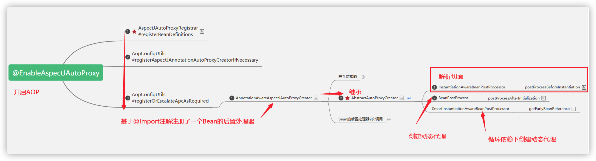
2.1 切面类的解析
spring通过@EnableAspectJAutoProxy开启aop切面，在注解类上面发现@Import(AspectJAutoProxyRegistrar.class)，AspectJAutoProxyRegistrar实现了ImportBeanDefinitionRegistrar，所以他会通过registerBeanDefinitions方法为我们容器导入beanDefinition。
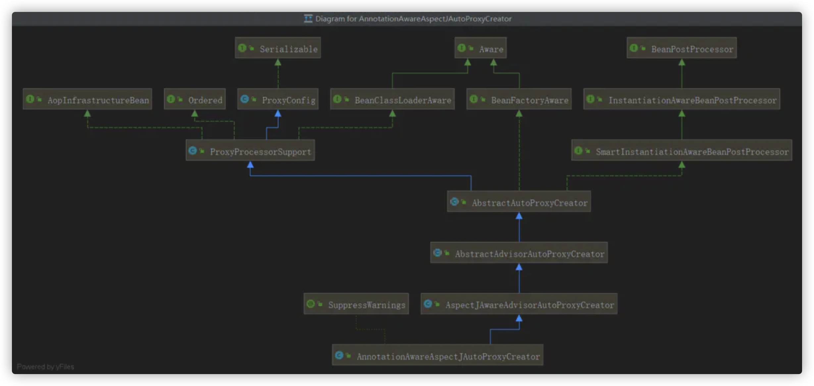
进入解析切面的过程：
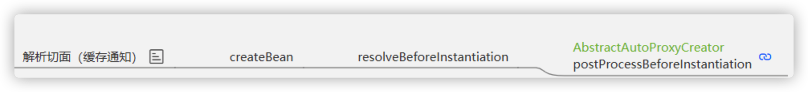
postProcessBeforeInstantiation是在任意bean创建的时候就调用了
org.springframework.beans.factory.support.AbstractAutowireCapableBeanFactory#resolveBeforeInstantiation
org.springframework.beans.factory.support.AbstractAutowireCapableBeanFactory#applyBeanPostProcessorsBeforeInstantiation
org.springframework.beans.factory.config.InstantiationAwareBeanPostProcessor#postProcessBeforeInstantiation
org.springframework.aop.framework.autoproxy.AbstractAutoProxyCreator#postProcessBeforeInstantiation
详细流程图： https://www.processon.com/view/link/5f1958a35653bb7fd24d0aad
追踪一下源码可以看到最终导入AnnotationAwareAspectJAutoProxyCreator，我们看一下他的类继承关系图，发现它实现了两个重要的接口，BeanPostProcessor和InstantiationAwareBeanPostProcessor 首先看InstantiationAwareBeanPostProcessor的postProcessBeforeInstantiation方法
Object postProcessBeforeInstantiation(Class<?> beanClass, String beanName)（InstantiationAwareBeanPostProcessor）
org.springframework.aop.framework.autoproxy.AbstractAutoProxyCreator#postProcessBeforeInstantiation
org.springframework.aop.aspectj.autoproxy.AspectJAwareAdvisorAutoProxyCreator#shouldSkip
org.springframework.aop.aspectj.annotation.AnnotationAwareAspectJAutoProxyCreator#findCandidateAdvisors
org.springframework.aop.aspectj.annotation.BeanFactoryAspectJAdvisorsBuilder#buildAspectJAdvisors
public List<Advisor> buildAspectJAdvisors() {
//获取缓存中的aspectBeanNames
List<String> aspectNames = this.aspectBeanNames;
if (aspectNames == null) {
synchronized (this) {
aspectNames = this.aspectBeanNames;
if (aspectNames == null) {
List<Advisor> advisors = new ArrayList<>();
aspectNames = new ArrayList<>(); //获取beanFactory中所有的beanNames
String[] beanNames = BeanFactoryUtils.beanNamesForTypeIncludingAncestors(this.beanFactory, Object.class, true, false);
for (String beanName : beanNames) {
if (!isEligibleBean(beanName)) {
continue;
}
// We must be careful not to instantiate beans eagerly as in this case they
// would be cached by the Spring container but would not have been weaved.
Class<?> beanType = this.beanFactory.getType(beanName);
if (beanType == null) {
continue;
}
//找出所有类上面含@Aspect注解的beanName
if (this.advisorFactory.isAspect(beanType)) {
//将找到的beanName放入aspectNames集合
aspectNames.add(beanName);
AspectMetadata amd = new AspectMetadata(beanType, beanName);
if (amd.getAjType().getPerClause().getKind() == PerClauseKind.SINGLETON) {
MetadataAwareAspectInstanceFactory factory = new BeanFactoryAspectInstanceFactory(this.beanFactory, beanName);
//1.找到切面类的所有但是不包括@Pointcut注解的方法 /
// /2.筛选出来包含@Around, @Before, @After,@ AfterReturning，
// @AfterThrowing注解的方法
// 3.封装为List<Advisor>返回
List<Advisor> classAdvisors = this.advisorFactory.getAdvisors(factory);
if (this.beanFactory.isSingleton(beanName)) {
//将上面找出来的Advisor按照key为beanName，value为List<Advisor>的形式存入advisorsCache
this.advisorsCache.put(beanName, classAdvisors);
} else {
this.aspectFactoryCache.put(beanName, factory);
}
advisors.addAll(classAdvisors);
} else { // Per target or per this.
if (this.beanFactory.isSingleton(beanName)) {
throw new IllegalArgumentException("Bean with name '" + beanName + "' is a singleton, but aspect instantiation model is not singleton");
}
MetadataAwareAspectInstanceFactory factory = new PrototypeAspectInstanceFactory(this.beanFactory, beanName);
this.aspectFactoryCache.put(beanName, factory);
advisors.addAll(this.advisorFactory.getAdvisors(factory));
}
}
}
this.aspectBeanNames = aspectNames;
return advisors;
}
}
}
if (aspectNames.isEmpty()) {
return Collections.emptyList();
}
List<Advisor> advisors = new ArrayList<>();
for (String aspectName : aspectNames) { //当再次进入该方法，会直接从advisorsCache缓存中获取
List<Advisor> cachedAdvisors = this.advisorsCache.get(aspectName);
if (cachedAdvisors != null) {
advisors.addAll(cachedAdvisors);
} else {
MetadataAwareAspectInstanceFactory factory = this.aspectFactoryCache.get(aspectName);
advisors.addAll(this.advisorFactory.getAdvisors(factory));
}
}
return advisors;
}
流程图：
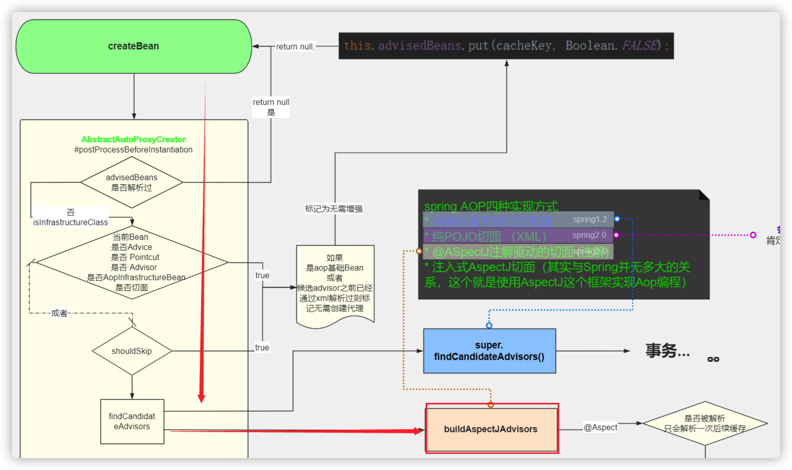
解析的步骤：
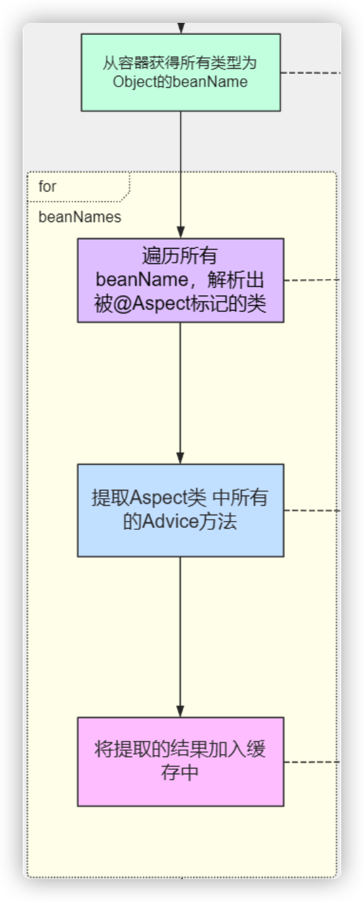
最终将解析出来的advisor放入缓存，这里思考清楚 advisor和advise的区别
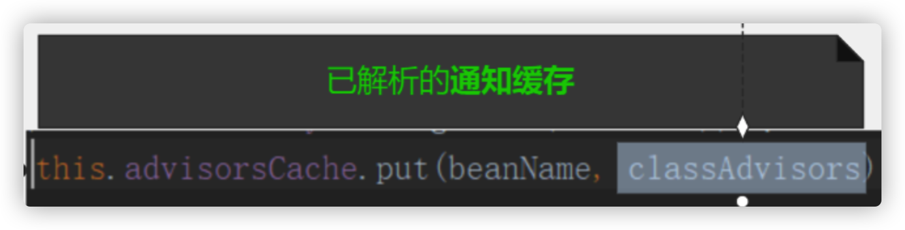
其实就是我们切面中的通知方法：
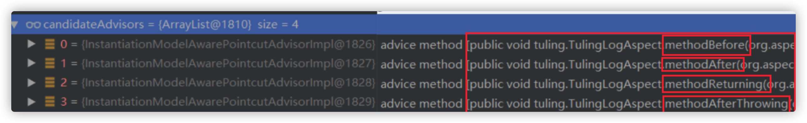
2.2 创建代理
进入创建代理的过程：
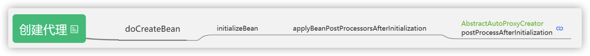
postProcessAfterInitialization是在bean创建完成之后执行的
org.springframework.beans.factory.support.AbstractAutowireCapableBeanFactory#doCreateBean
org.springframework.beans.factory.support.AbstractAutowireCapableBeanFactory#initializeBean(java.lang.String, java.lang.Object, org.springframework.beans.factory.support.RootBeanDefinition)
org.springframework.beans.factory.support.AbstractAutowireCapableBeanFactory#applyBeanPostProcessorsAfterInitialization
org.springframework.beans.factory.config.BeanPostProcessor#postProcessAfterInitialization
org.springframework.aop.framework.autoproxy.AbstractAutoProxyCreator#postProcessAfterInitialization
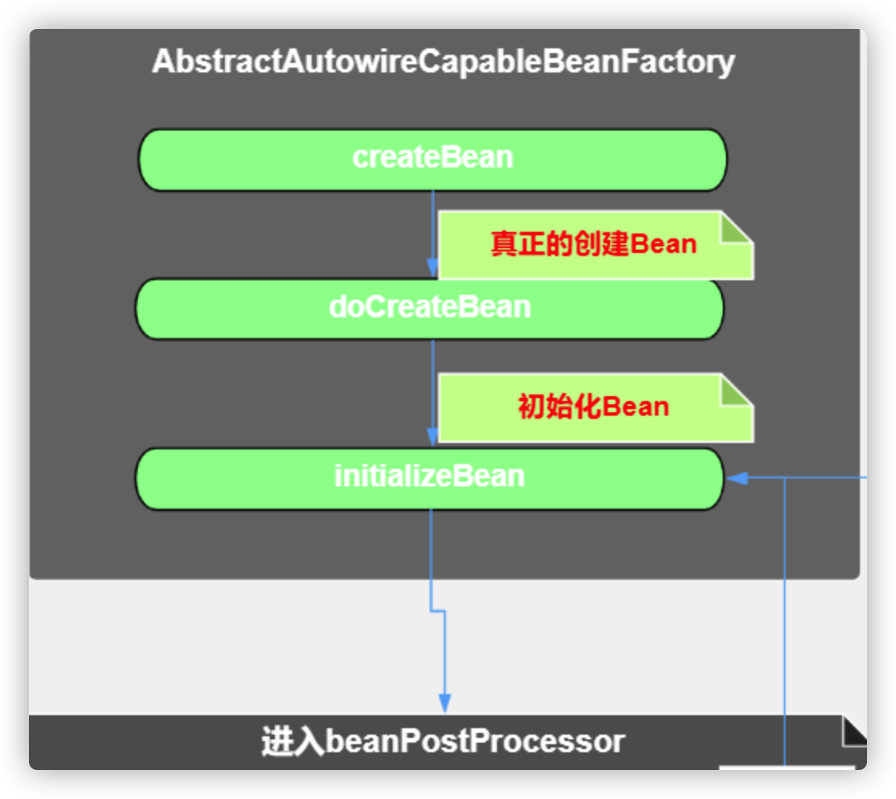
详细流程图： https://www.processon.com/view/link/5f1e93f25653bb7fd2549b7c
获取advisors
创建代理之前首先要判断当前bean是否满足被代理， 所以需要将advisor从之前的缓存中拿出来和当前bean 根据表达式进行匹配：
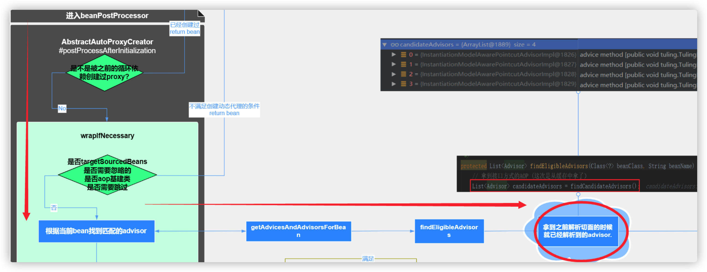
Object postProcessAfterInitialization(@Nullable Object bean, String beanName)（BeanPostProcessor）
org.springframework.aop.framework.autoproxy.AbstractAutoProxyCreator#postProcessAfterInitialization
org.springframework.aop.framework.autoproxy.AbstractAutoProxyCreator#wrapIfNecessary
org.springframework.aop.framework.autoproxy.AbstractAdvisorAutoProxyCreator#getAdvicesAndAdvisorsForBean
org.springframework.aop.aspectj.annotation.AnnotationAwareAspectJAutoProxyCreator#findCandidateAdvisors
上述代码的链路最终到了findCandidateAdvisors，我们发现在postProcessBeforeInstantiation方法中对查找到的Advisors做了缓存，所以这里只需要从缓存中取就好了 最后创建代理类，并将Advisors赋予代理类，缓存当前的代理类
匹配
根据advisors和当前的bean根据切点表达式进行匹配，看是否符合。
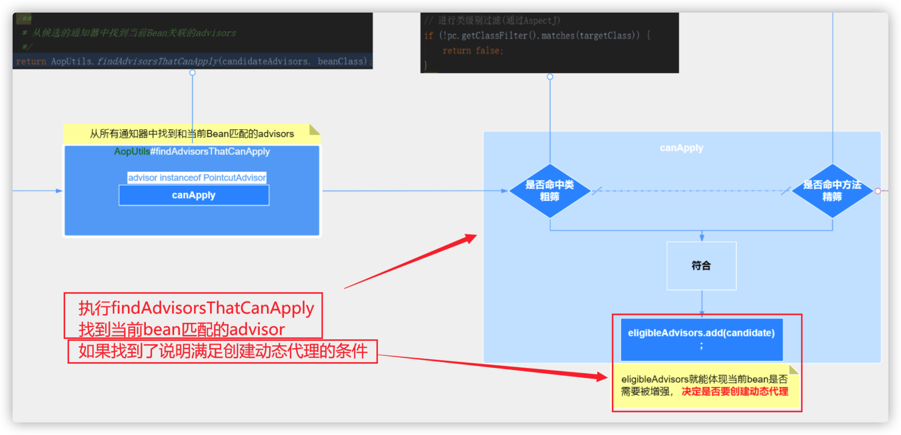
org.springframework.aop.framework.autoproxy.AbstractAdvisorAutoProxyCreator#findAdvisorsThatCanApply
org.springframework.aop.support.AopUtils#findAdvisorsThatCanApply
org.springframework.aop.support.AopUtils#canApply(org.springframework.aop.Advisor, java.lang.Class<?>, boolean) 拿到PointCut
org.springframework.aop.support.AopUtils#canApply(org.springframework.aop.Pointcut, java.lang.Class<?>, boolean)
org.springframework.aop.ClassFilter#matches 粗筛
org.springframework.aop.IntroductionAwareMethodMatcher#matches 精筛
创建代理
找到了 和当前Bean匹配的advisor说明满足创建动态代理的条件：
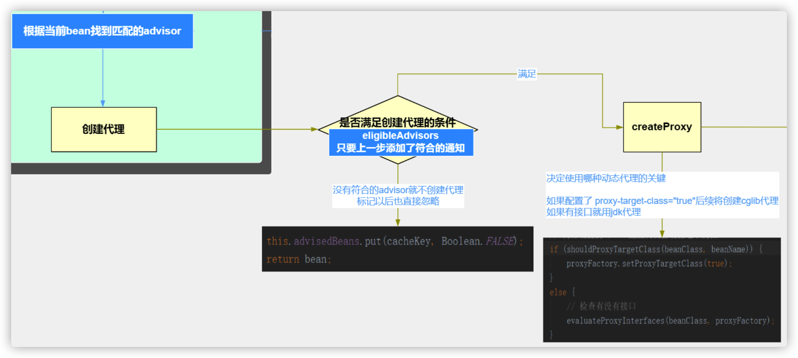
Object proxy = createProxy(
bean.getClass(),
beanName,
specificInterceptors,
new SingletonTargetSource(bean));
this.proxyTypes.put(cacheKey, proxy.getClass());
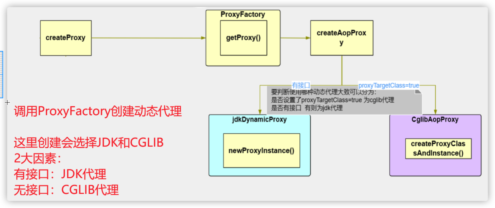
理解了上面两个重要的方法，我们只需要将他与创建bean的流程联系起来就可以知道代理对象创建的整个流程了，在before和after方法分别放置断点，我们可以看到他的整个调用链路
2.3 代理类的调用
https://www.processon.com/view/link/5f4dd513e0b34d1abc735998 前面的分析可知，spring将找到的增强器Advisors赋予了代理类，那么在执行只要将这些增强器应用到被代理的类上面就可以了，那么spring具体是怎么实现的呢，下面我们以jdk代理为例分析一下源码：
public Object invoke(Object proxy, Method method, Object[] args) throws Throwable {
MethodInvocation invocation;
Object oldProxy = null;
boolean setProxyContext = false;
//获取当前被代理类
argetSource targetSource = this.advised.targetSource;
Object target = null;
// equals，hashcode等方法不做代理，直接调用
try {
if (!this.equalsDefined && AopUtils.isEqualsMethod(method)) {
// The target does not implement the equals(Object) method itself.
return equals(args[0]);
} else if (!this.hashCodeDefined && AopUtils.isHashCodeMethod(method)) {
// The target does not implement the hashCode() method itself.
return hashCode();
} else if (method.getDeclaringClass() == DecoratingProxy.class) {
// There is only getDecoratedClass() declared -> dispatch to proxy config.
return AopProxyUtils.ultimateTargetClass(this.advised);
} else if (!this.advised.opaque && method.getDeclaringClass().isInterface() &&
method.getDeclaringClass().isAssignableFrom(Advised.class)) {
// Service invocations on ProxyConfig with the proxy config...
return AopUtils.invokeJoinpointUsingReflection(this.advised, method, args);
}
Object retVal;
// 将代理对象放到线程本地变量中
if (this.advised.exposeProxy) {
// Make invocation available if necessary.
oldProxy = AopContext.setCurrentProxy(proxy);
setProxyContext = true;
}
// Get as late as possible to minimize the time we "own" the target,
// in case it comes from a pool.
target = targetSource.getTarget();
Class<?> targetClass = (target != null ? target.getClass() : null);
//将增加器装换为方法执行拦截器链
List<Object> chain = this.advised.getInterceptorsAndDynamicInterceptionAdvice(method, targetClass);
// Check whether we have any advice. If we don't, we can fallback on direct
// reflective invocation of the target, and avoid creating a MethodInvocation.
if (chain.isEmpty()) {
// We can skip creating a MethodInvocation: just invoke the target directly
// Note that the final invoker must be an InvokerInterceptor so we know it does
// nothing but a reflective operation on the target, and no hot swapping or fancy proxying.
Object[] argsToUse = AopProxyUtils.adaptArgumentsIfNecessary(method, args);
retVal = AopUtils.invokeJoinpointUsingReflection(target, method, argsToUse);
} else {
//将拦截器链包装为ReflectiveMethodInvocation并执行
invocation = new ReflectiveMethodInvocation(proxy, target, method, args, targetClass, chain);
retVal = invocation.proceed();
}
// Massage return value if necessary.
Class<?> returnType = method.getReturnType();
if (retVal != null && retVal == target &&
returnType != Object.class && returnType.isInstance(proxy) &&
!RawTargetAccess.class.isAssignableFrom(method.getDeclaringClass())) {
// Special case: it returned "this" and the return type of the method
// is type-compatible. Note that we can't help if the target sets
// a reference to itself in another returned object.
retVal = proxy;
} else if (retVal == null && returnType != Void.TYPE && returnType.isPrimitive()) {
throw new AopInvocationException("Null return value from advice does not match primitive return type for: " + method);
}
return retVal;
} finally {
if (target != null && !targetSource.isStatic()) {
// Must have come from TargetSource.
targetSource.releaseTarget(target);
}
if (setProxyContext) {
// Restore old proxy.
AopContext.setCurrentProxy(oldProxy);
}
}
}
通过上面代码可知，将增强器装换为方法拦截器链，最终包装为ReflectiveMethodInvocation执行它的proceed方法，那么我们就来看下具体如果执行
public Object proceed() throws Throwable {
// 当执行到最后一个拦截器的时候才会进入
if (this.currentInterceptorIndex == this.interceptorsAndDynamicMethodMatchers.size() - 1) {
return invokeJoinpoint();
}
//获取集合当前需要运行的拦截器
Object interceptorOrInterceptionAdvice =
this.interceptorsAndDynamicMethodMatchers.get(++this.currentInterceptorIndex);
if (interceptorOrInterceptionAdvice instanceof InterceptorAndDynamicMethodMatcher) {
// Evaluate dynamic method matcher here: static part will already have
// been evaluated and found to match.
InterceptorAndDynamicMethodMatcher dm =
(InterceptorAndDynamicMethodMatcher) interceptorOrInterceptionAdvice;
Class<?> targetClass = (this.targetClass != null ? this.targetClass : this.method.getDeclaringClass());
if (dm.methodMatcher.matches(this.method, targetClass, this.arguments)) {
return dm.interceptor.invoke(this);
} else {
// Dynamic matching failed.
// Skip this interceptor and invoke the next in the chain.
return proceed();
}
} else {
// 执行拦截器方法
return ((MethodInterceptor) interceptorOrInterceptionAdvice).invoke(this);
}
}
这样一看会感觉很蒙，其实追踪一下源码就很好理解了
org.springframework.aop.interceptor.ExposeInvocationInterceptor#invoke
public Object invoke(MethodInvocation mi) throws Throwable {
MethodInvocation oldInvocation = invocation.get();
invocation.set(mi);
try {
return mi.proceed();
} finally {
invocation.set(oldInvocation);
}
}
org.springframework.aop.aspectj.AspectJAfterThrowingAdvice#invoke
异常拦截器，当方法调用异常会被执行
public Object invoke(MethodInvocation mi) throws Throwable {
try {
return mi.proceed();
} catch (Throwable ex) {
if (shouldInvokeOnThrowing(ex)) {
invokeAdviceMethod(getJoinPointMatch(), null, ex);
}
throw ex;
}
}
org.springframework.aop.framework.adapter.AfterReturningAdviceInterceptor#invoke 返回拦截器，方法执行失败，不会调用
public Object invoke(MethodInvocation mi) throws Throwable {
Object retVal = mi.proceed();
this.advice.afterReturning(retVal, mi.getMethod(), mi.getArguments(), mi.getThis());
return retVal;
}
org.springframework.aop.aspectj.AspectJAfterAdvice#invoke 后置拦截器，总是执行
public Object invoke(MethodInvocation mi) throws Throwable {
try {
return mi.proceed();
} finally {
invokeAdviceMethod(getJoinPointMatch(), null, null);
}
}
org.springframework.aop.framework.adapter.MethodBeforeAdviceInterceptor#invoke 前置拦截器
public Object invoke(MethodInvocation mi) throws Throwable {
this.advice.before(mi.getMethod(), mi.getArguments(), mi.getThis());
return mi.proceed();
}
这里用了责任链的设计模式，递归调用排序好的拦截器链
问题
- 介绍下AspectJ和AOP和关系
- Spring AOP中aspect、advise、pointcut、advisor分别有什么意义?
- 介绍AOP有几种实现方式
- 简单介绍Spring-AOP的底层原理